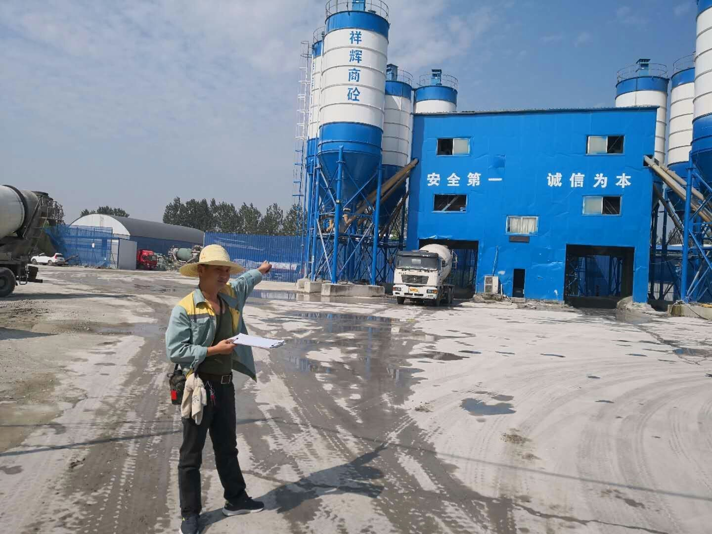
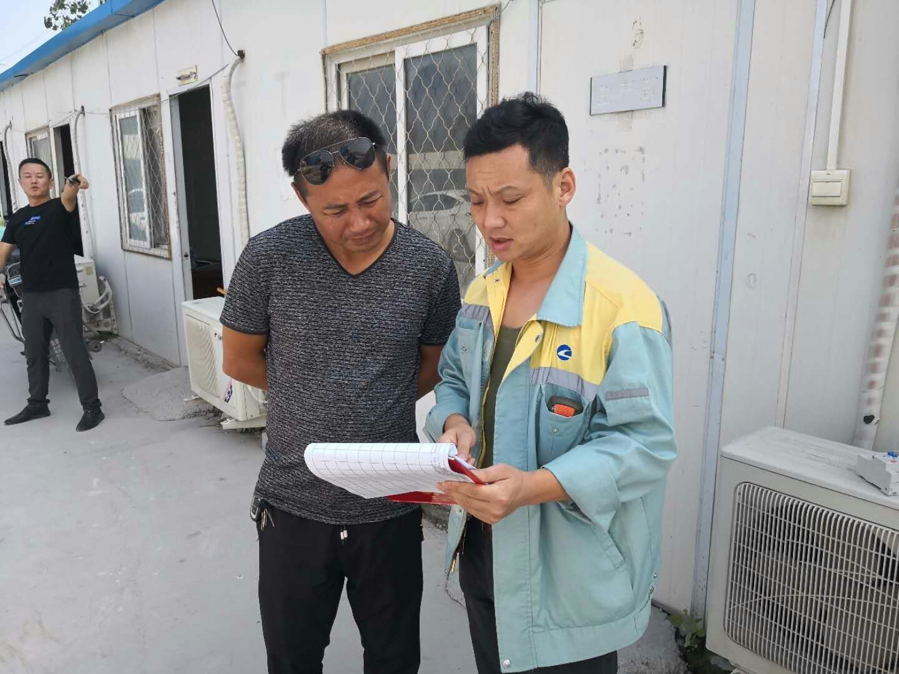
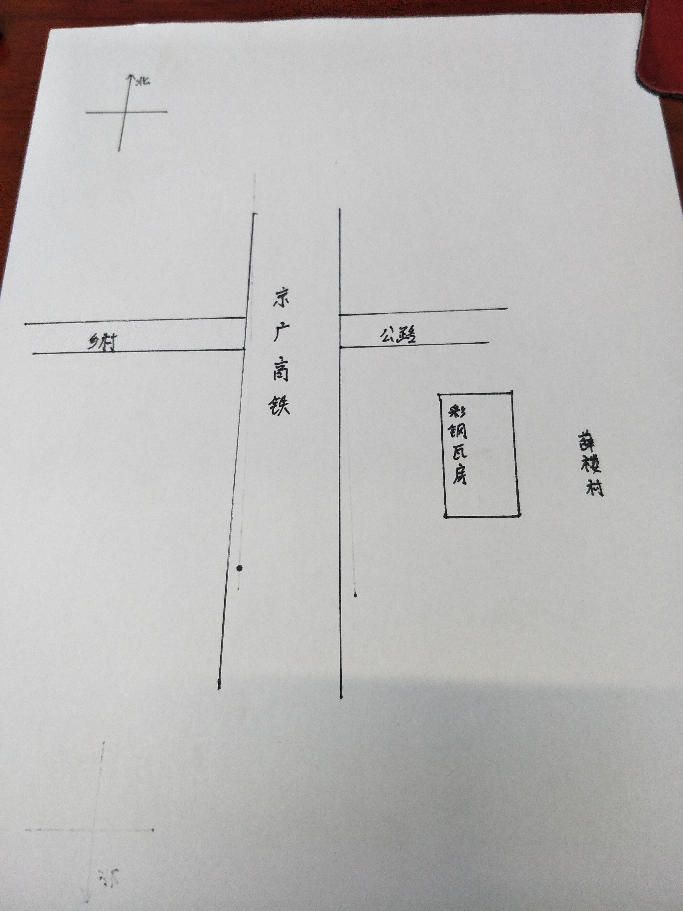

安保区018号隐患"一事一档一图"处置记录表
档案编号：018 驻马店西路桥工区
建档时间：2018.8.23
| 地点 | 京广高铁k897+600 | ||
| 管辖车间、工区 | 驻西客专车间驻马店西路桥工区 | ||
| 责任单位（施工单位、业主、归属地管理单位） | 业主单位：驻马店市遂平县薛楼村 | ||
| 施工单位：无 | |||
| 归属地：驻马店市遂平县薛楼村 | |||
| 责任人及联系方式 | 业主单位: | ||
| 施工单位: | |||
| 个 体: | |||
| 问题描述 | 问题描述 | 京广高铁漯驻特大桥东侧下行1592墩，环宇拌合站有彩钢瓦房20X40米距高铁20m | 
隐患照片 |
| 铁路安全保护区范围 | 该处铁路安全保护区为15米. | ||
| 风险评估 | 描述会对铁路造成什么样的安全隐患：刮大风时违章搭建彩钢瓦被吹到铁路上，造成影响行车安全的隐患 | ||
| 处置过程 | 2018年8月23日驻马店西路桥工区余勇检查至京广高铁京广高铁漯驻特大桥东侧下行1592墩，环宇拌合站有彩钢瓦房20X40米距高铁20m，已找到责任人并下发路外安全环境隐患排查告知书 | ||
| 处置结案 | 附照片 | ||
| 后期情况 | 派工单、检查照片及现场有无变化情况说明 |  | |
后附：处置过程记录资料
隐患一事一图
